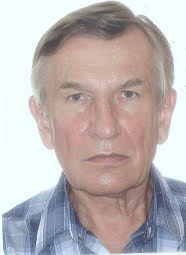

Home | About | CV | Editorial Services | Publications | Contact
Alfred Szmidt is a forest population geneticist and a Professor Emeritus of Biology at Kyushu University in Fukuoka, Japan. He lives in his native country: Poland. He remains professionally active.

© A. E. Szmidt. April, 2021 | Website under construction